遊びで植物を育てよう
2024/11/04
今年はバジルの花があまり咲いていません。
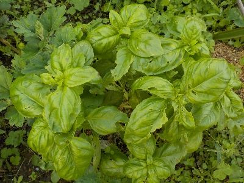
いつもは9月や10月にバジルのタネを収穫するんですが、11月になってもまだあまり花が咲いていません。
なので今年はまだタネの収穫をしていません。収穫できるか不安です。
去年のタネがまだ余ってるから、今年はダメでもいいかな。
【バジルTOP】
【野菜TOP】
【園芸TOP】
2024/09/29
セミドライバジルを作って冷凍することにしました。
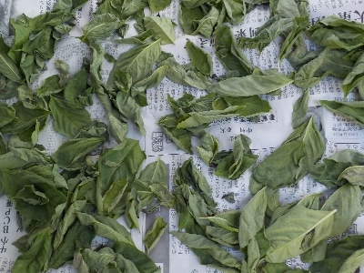
ドライバジルだと香りが足りない。そのまま冷凍だと体積が大きくて邪魔です。
なので中間のセミドライバジルを冷凍することにしました。
水分が少ないのでジップロックにそのま詰めてもくっ付かないです。必要な枚数を出して使うだけで簡単です。
一番の問題は料理にバジルを使うかってところです。使ってもちょっとあれば十分なんだな。
【バジルTOP】
【野菜TOP】
【園芸TOP】
2024/05/13
去年余ったバジルのタネをまきました。
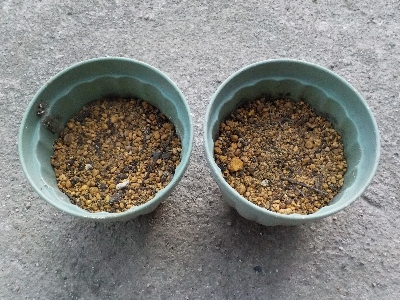
去年買ったバジルのタネが余っているのでまきました。たぶん暖かくなったら発芽するでしょう。
まだタネが残っているので、発芽しなかったらまた蒔きます。
【バジルTOP】
【野菜TOP】
【園芸TOP】
2023/10/09
今年はバジルをあまり食べませんでした。
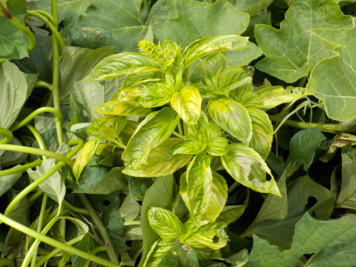
今年はトマトがあまり採れなかったので、バジルは活躍しませんでした。
以前は乾燥バジルを作って年中使っていましたが、今はそこまで好きじゃないかな。
また好きになったら食べよう。
【バジルTOP】
【野菜TOP】
【園芸TOP】
2023/06/04
バジルが一鉢発芽しませんでした。
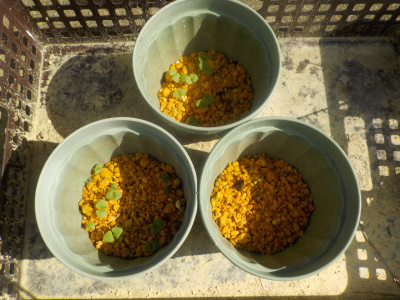
何故か右下の鉢は発芽しませんでした。種のまき忘れなんてないと思うんですけど。
種は沢山あまっているので、まき直ししました。
【バジルTOP】
【野菜TOP】
【園芸TOP】
2023/05/25
バジルの芽は小さいですね。
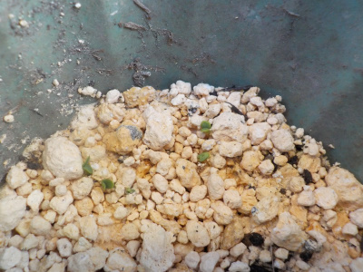
緑の小さいのが少し出ました。とっても小さい。
これを大きくするのは時間がかかりそうですね。
【バジルTOP】
【野菜TOP】
【園芸TOP】
2023/05/18
バジルが欲しくなったのでダイソーでタネを買いました。
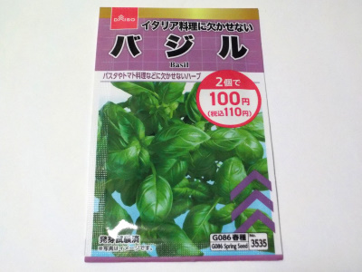
ホームセンターとかでバジルの苗を買って、挿し芽して増やそうと思いました。
でも苗1本100円以上していて、ちょっと高いと思ったので種にしました。

種は大量に入っていたんですが、とりあえず1つの鉢に20粒くらいまきました。
発芽率が半分でも大量です。失敗したらまたまきます。
【バジルTOP】
【野菜TOP】
【園芸TOP】
2020/09/13
バジルが大きく育ったので、ハーブっぽくなりました。
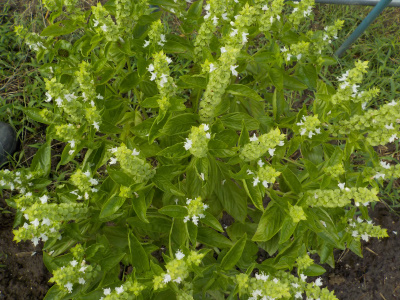
沢山枝分かれして大きく育つと見栄えがいいですね。
花壇にあってもいいかもって思いました。
【バジルTOP】
【野菜TOP】
【園芸TOP】
2014/08/09
バジルの花が咲きました。
バジルが大きく成長したので、花が咲きだしました。
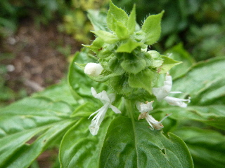
花が付くと栄養を取られて、葉っぱが育たなくなるなんて言うので、切取りました。
今年はバジルをすでに沢山収穫していて、ドライバジルが大量に作ってあります。
これ以上あっても食べれないかもしれない。
でも収獲出来るものを止めるのももったいないので、もうちょっと育てようかと思います。
【バジルTOP】
【野菜TOP】
【園芸TOP】
2014/06/14
バジルの苗が沢山育ちました。
種からいっぱい芽がでました。
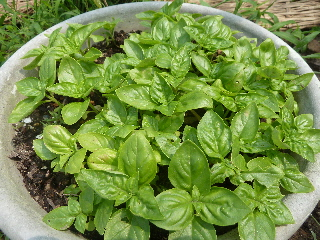
こんなに沢山いらないので、大きいものを選んで地植えにしました。
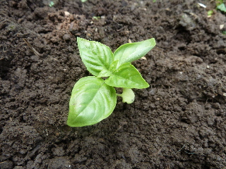
バジルは苗もいい香りですね。
小さいですが、さわっているだけでも臭いがしてきました。
あんまり沢山植えると食べきれないですが、苗がいっぱいあるので多めに植えました。
収獲は何日後かな？
【バジルTOP】
【野菜TOP】
【園芸TOP】
2014/04/29
バジルの芽が出ました。
種蒔きしたバジルが芽を出しました。
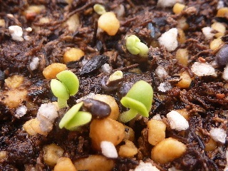
ここまで順調だったんですが、
この後、何者かに芽を取られてしまいました。
鳥かな？
葉っぱを取られて、根っこだけになってしまった。
また再挑戦します。
【バジルTOP】
【野菜TOP】
【園芸TOP】
2014/04/20
バジルの種を蒔きました。
去年採ったバジルの種です。
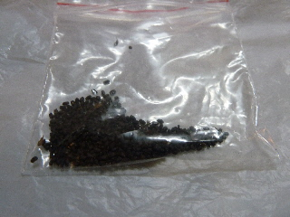
小さいタネが大量です。
小さいプランターにパラパラと蒔いたんですが、四分の一も使いませんでした。
今回失敗しても、次々挑戦出来そうです。
【バジルTOP】
【野菜TOP】
【園芸TOP】
2013/09/28
バジルの種が出来ました。
花を摘まないで放っておいたら、沢山種が出来ました。
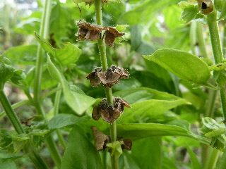
来年種を蒔こうと思います。
種が沢山あるので、もう挿し木をする必要もないかも。
【バジルTOP】
【野菜TOP】
【園芸TOP】
2013/08/10
バジルを大量に収穫したので、バジルペーストを作りました。
ちょっと放置してたらバジルが沢山育ってました。
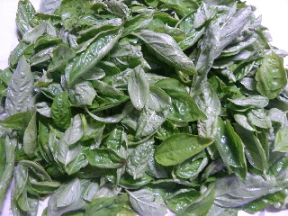
大量に収穫できました。
これはもうバジルペーストを作るしか消費方法が浮かばなかったので、ミキサーを引っ張り出してバジルペーストを作りました。
どうせ冷凍するので、材料の分量は適当です。
料理に活用します。
【バジルTOP】
【野菜TOP】
【園芸TOP】
2013/06/09
バジルの挿し芽を植えました。
水につけてたバジルの根が沢山でたので、地面に植えました。
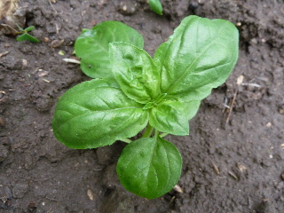
こんなのを5本植えました。
後は大きくして食べるだけです。
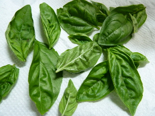
親株のバジルを収穫しました。
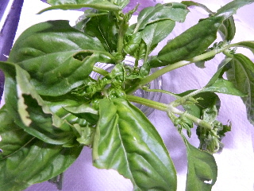
今回は虫食いが沢山あったので、いい葉っぱを収獲した後の茎をまた水につけました。
更に増殖予定です。
【バジルTOP】
【野菜TOP】
【園芸TOP】
2013/05/26
今年もバジルを育ててます。
バジルの苗を植えているんですが、大きくしようと思ってほっておいたら、花が付きそうになってました。
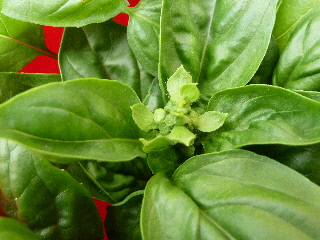
さっそく摘み取って、水に漬けました。
これからドンドン株を増やす予定です。
【バジルTOP】
【野菜TOP】
【園芸TOP】
2013/01/20
バジルは完全に枯れちゃった。
寒くなってから全然気にしていなかった鉢植えバジルです。
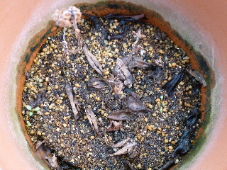
すっかり枯れましたね。
春になったら復活するとか、種が落ちてて新しく芽が出てきたらいいなーなんて都合のいい事を考えて放置しています。
【バジルTOP】
【野菜TOP】
【園芸TOP】
料理にバジルを入れると、みんな似た感じの味になる気がする。あまり多用は出来ない気がする。
【おいしいものを食べよう。】【たくさん寝よう。】
【ソロ活をしよう!】【季節感のあることをしよう。】【動画視聴はほどほどに。】【当サイトの全てのコンテンツは無断転載禁止です。】